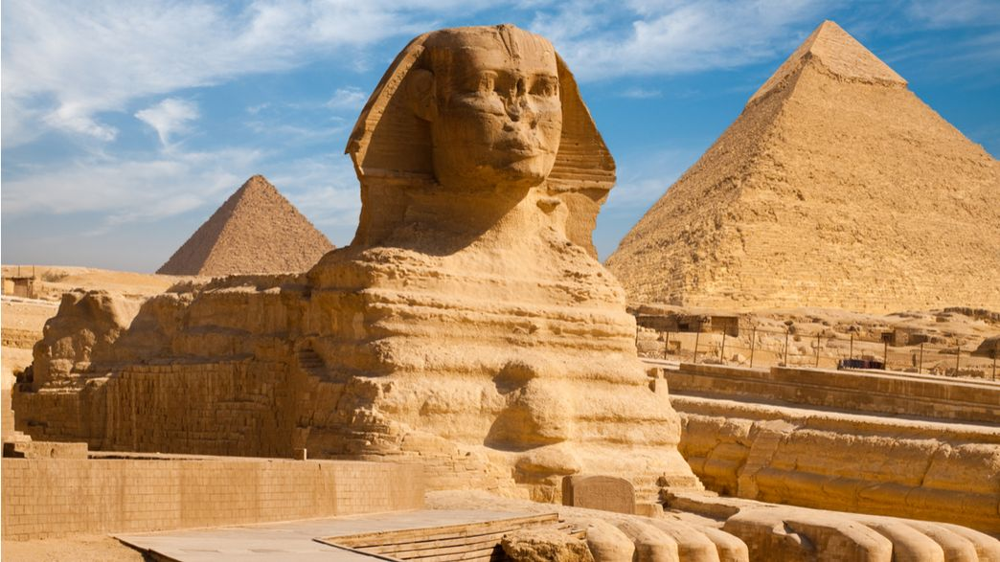
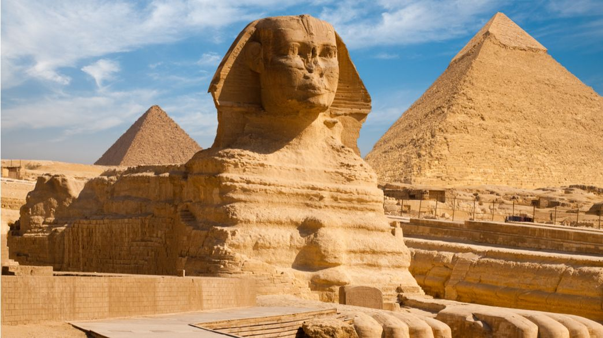
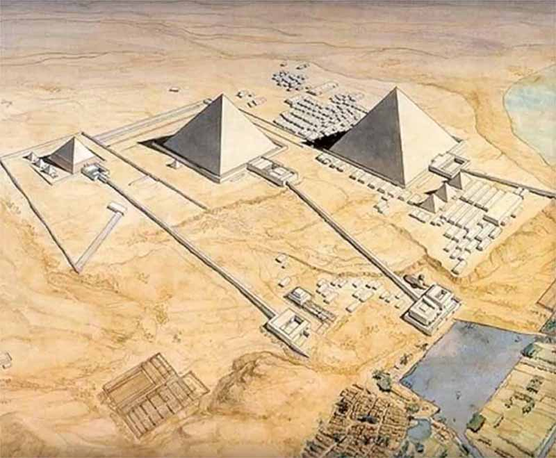
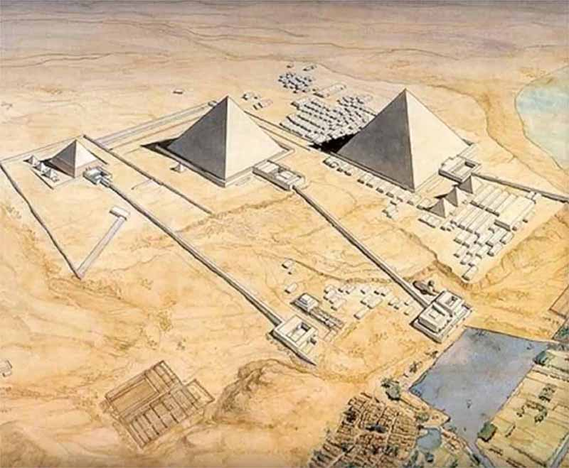

Giza
Egypt
The Giza pyramid complex (also called the Giza necropolis) is the site on the Giza Plateau in Greater Cairo, Egypt that includes the Great Pyramid of Giza, the Pyramid of Khafre, and the Pyramid of Menkaure, along with the Great Sphinx of Giza. All were built during the Fourth Dynasty of the Old Kingdom of Ancient Egypt, between 2600 and 2500 BC.
The site is at the edges of the Western Desert, approximately 9 kilometres west of the Nile River in the city of Giza.
The Great Pyramid and the Pyramid of Khafre are the largest pyramids built in ancient Egypt, and they have historically been common as emblems of Ancient Egypt in the Western imagination. It is by far the oldest of the Ancient Wonders and the only one still in existence.
The Giza pyramid complex consists of the G reat Pyramid (also known as the Pyramid of Cheops), the somewhat smaller Pyramid of Khafre (or Chephren), and the relatively modest-sized Pyramid of Menkaure (or Mykerinos). The Great Sphinx lies on the east side of the complex. Along with these major monuments are a number of smaller satellite edifices, known as "queens" pyramids, causeways and valley pyramids.
The pyramids of Giza and others are thought to have been constructed to house the remains of the deceased pharaohs who ruled over Ancient Egypt. A portion of the pharaoh's spirit was believed to remain with his corpse.
Most construction theories are based on the idea that the pyramids were built by moving huge stones from a quarry and dragging and lifting them into place. Disagreements arise over the feasibility of the different proposed methods by which the stones were conveyed and placed.
In building the pyramids, the architects might have developed their techniques over time. They would select a site on a relatively flat area of bedrock, which provided a stable foundation. After carefully surveying the site and laying down the first level of stones, they constructed the pyramids in horizontal levels, one on top of the other.
To ensure that the pyramid remained symmetrical, the exterior casing stones all had to be equal in height and width. Workers might have marked all the blocks to indicate the angle of the pyramid wall and trimmed the surfaces carefully so that the blocks fit together.
The site was inscribed on the UNESCO World Heritage List in 1979. The Great Pyramid of Giza, largest and oldest of the three pyramids at the Giza Necropolis was granted honorary status in the New 7 Wonders of the World list.
 

 
